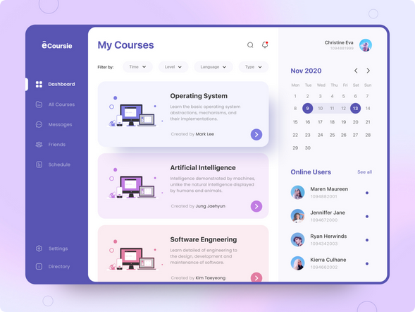

Inspiração para o projeto
No curso de Licenciatura em Informática, na disciplina "Introdução ao Desenvolvimento Web" foi proposto o desenvolvimento de um portifólio para guardar as atividades realizadas durante as aulas. Busquei uma inspiração na plataforma Pinterest e encontrei o projeto da imagem acima, onde podemos perceber uma estrutura de dashboard, um menu de navegação localizado na lateral da tela e um container à direita reservado para os conteúdos das telas.
Logo
A logo foi desenvolvida por meio de uma ferramenta online chamada Logo. Essa ferramenta utiliza inteligência artificial e cria a logo da empresa através do nome da empresa/entidade, das cores da paleta e de acordo com os modelos que o usuário tiver interesse.